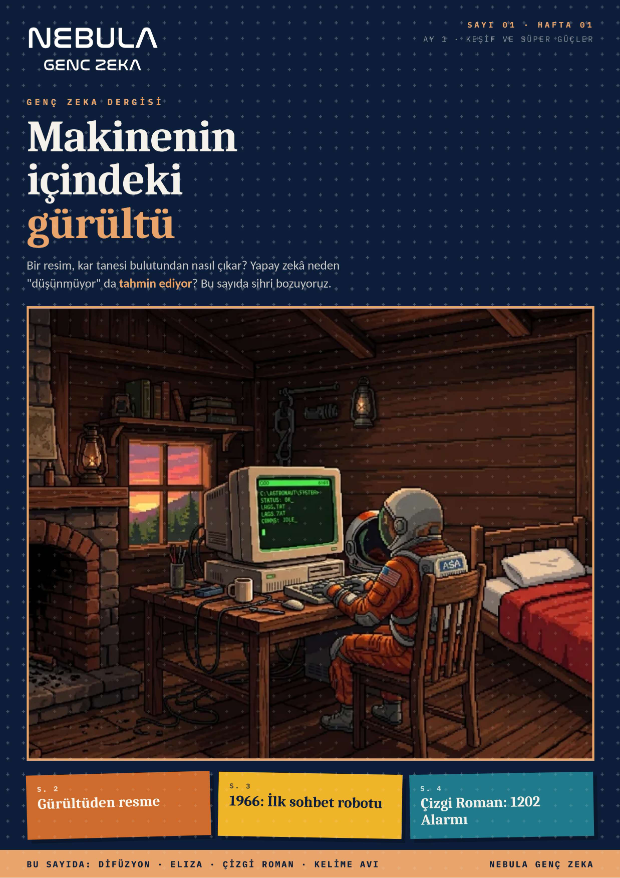
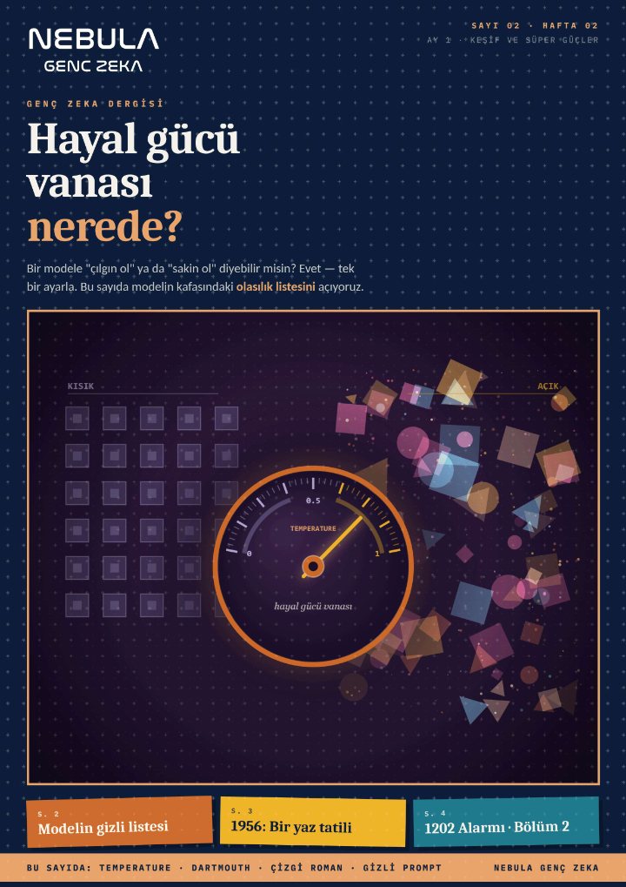
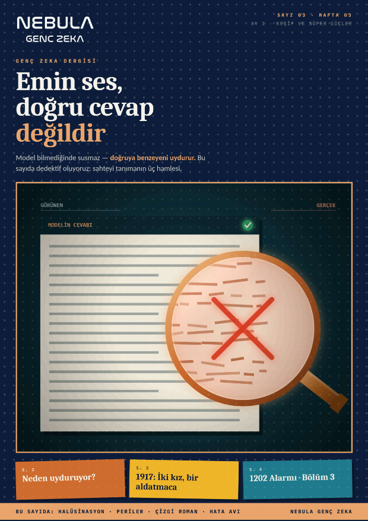
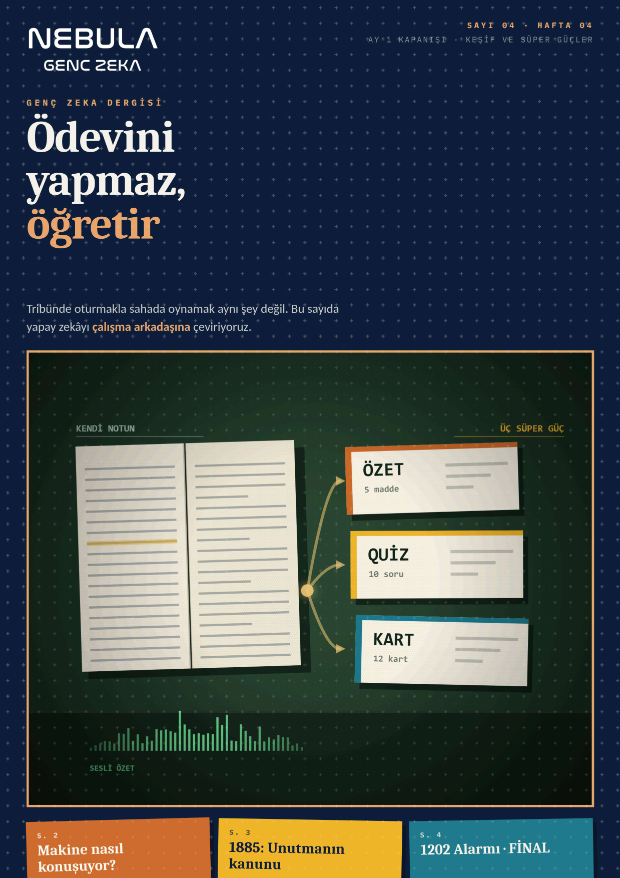

Canlı yapay zeka kullanımı eğitimi. Her ders bitmiş bir ürünle bitiyor: bir web sitesi, oynanabilir bir oyun, kendi şarkısı, kendi kısa filmi.
Aşağı kaydırDers bitince elinde
gerçek bir şey kalıyor.
Soyut bir “yapay zeka farkındalığı” değil. Yayınlanabilir, paylaşılabilir, arkadaşına gösterilebilir altı somut çıktı. Her kartın altında o çıktıdan öğrencilerin yaptıkları var.
Birebir ders, net bir düzen.
100+ yapay zeka,
tek panele düşüyor.
Yapay zeka için onlarca farklı site var. Her biri ayrı üyelik, ayrı ödeme istiyor. Nebula hepsini tek panelde birleştiriyor; Öğrencimlerimiz sitemizdeki kendi hesaplarında diledikleri yapay zekayı kullanabiliyor.
Her ders bir sayıyla bitiyor.
Öğrenci dersten çıkarken o haftanın sayısı panelinde hazır bekliyor: 8–12 sayfalık PDF, o günkü dersle birebir eşleşiyor.




-
Dersin özetiO hafta ne öğrenildi, hangi araç kullanıldı, öğrenci ne üretti.
-
Kim bu isim?Bilgisayar tarihinden bir portre — hayatı, işi, bıraktığı iz.
-
Yapay zeka notlarıKısa, şaşırtıcı bilgiler; haftanın konusuna bağlanan ayrıntılar.
-
Zaman tüneliGeçmişten o haftaya uzanan bir olay, tarihiyle birlikte.
-
Çizgi romanEski yazılımcıların hikâyesi. Her sayıda bir bölüm, ayda bir hikâye.
-
Haftanın bulmacasıLabirent, eşleştirme, kelime avı — kalemle çözülen sayfalar.
Çocuğunuzu kime emanet ediyorsunuz?
Merak ettiğinizi
sorun.
Kayıt için acele etmenize gerek yok. Önce yazın, konuşalım; isterseniz ücretsiz deneme dersiyle çocuğunuz bizzat denesin.